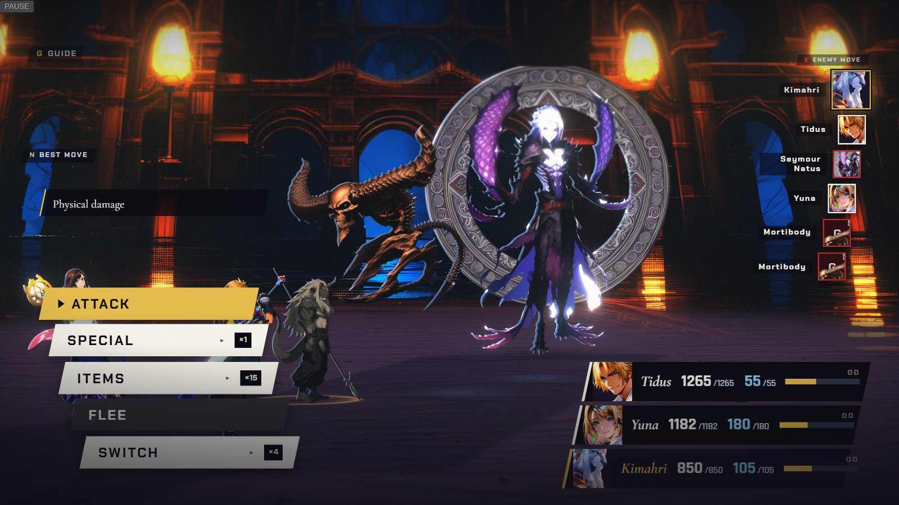

Claw — shatter 90%
C
Marks in the world — phase 2: Kimahri is stone, the Claw is next
Real engine frame + real HUD (Chapter VII battle, names swapped) · overlays are the mockup · party numbers illustrative
CONCEPT